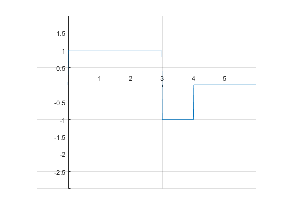
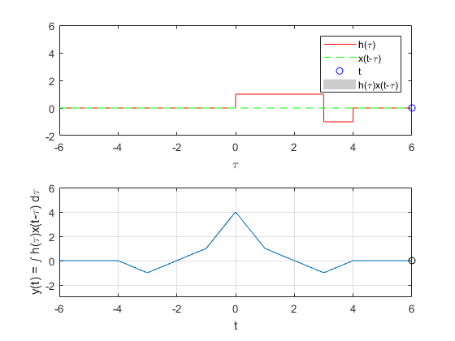
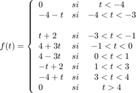

PROBLEMA 4
Para el PR06 reporte la grafica de la simulación númerica de la correalción y compare con el resultado análitico que obtuvo para el problema f), esto es, su práctica tendrá que incluir una llamada a la funciónn convconm y posteriormente se tendrá que mostrar (mediante el Publish) la gráfica tanto de las señales involucradas como el resultado de su correlación, y en esta última graficara su resultado analitico, se tendrá que incluir el resultado analitico. Realice la correlacion de las señales en las figuras 5 y 6
Contents
Figura 5
figure; h=@(t) 1.*((t>=0)&(t<3))-1.*((t>=3)&(t<4)); t = (-0.01:0.01:6); s=h(t); plot (t,s); grid on; axis([-1 6 -3 2]); ax=gca; ax.XAxisLocation = 'origin'; ax.YAxisLocation = 'origin'; ax.Box='off';
Figura 6
figure; x=@(t) -1.*((t>=-4)&(t<-3))+1.*((t>=-3)&(t<0)); t = (-5:0.01:2); s=x(t); plot (t,s); grid on; axis([-5 2 -3 2]); ax=gca; ax.XAxisLocation = 'origin'; ax.YAxisLocation = 'origin'; ax.Box='off'; f=@(t) (-4-t).*((t>=-4)&(t<-3))+(t+2).*((t>=-3)&(t<-1))+(4+3.*t).*((t>=-1)&(t<0))+(-3.*t+4).*((t>=0)&(t<1))+(-t+2).*((t>=1)&(t<3))+(-4+t).*((t>=3)&(t<4));

RESULTADO CORRELACION
f=@(t) (-4-t).*((t>=-4)&(t<-3))+(t+2).*((t>=-3)&(t<-1))+(4+3.*t).*((t>=-1)&(t<0))+(-3.*t+4).*((t>=0)&(t<1))+(-t+2).*((t>=1)&(t<3))+(-4+t).*((t>=3)&(t<4)); x=@(t) -1.*((t>=-4)&(t<-3))+1.*((t>=-3)&(t<0)); h=@(t) 1.*((t>=0)&(t<3))-1.*((t>=3)&(t<4)); convconm2(x, h, f, -6, 6, -2, 6, -3, 6, -6:.1:6);
RESULTADO ANALITICO
